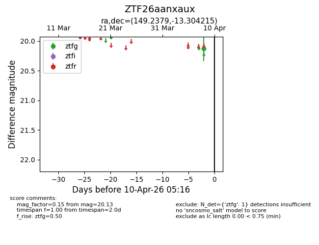
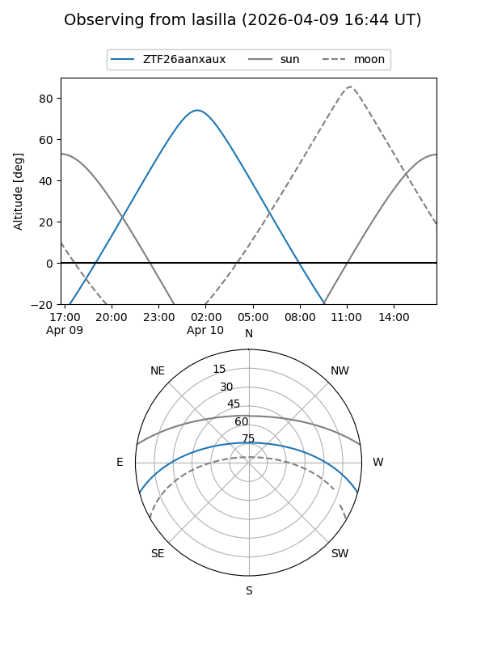
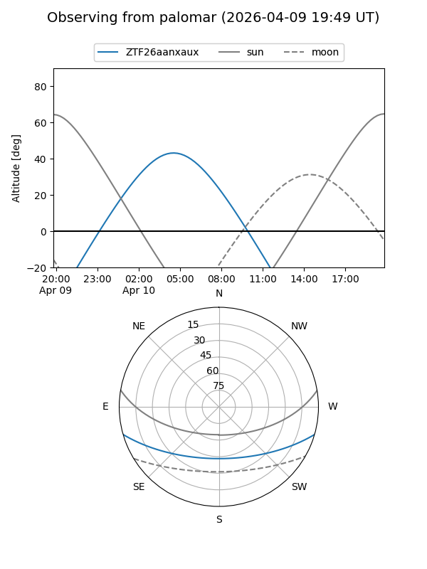

ZTF26aanxaux
Target ZTF26aanxaux at 2026-04-10 05:24
Aliases and brokers:
FINK: link
Lasair: link
ALeRCE: link
alt names
ZTF26aanxaux (ztf,fink_ztf)
Coordinates:
equatorial (ra, dec) = 149.2379,-13.30421
equatorial (HMS+DMS) = 09:56:57.10,-13:18:15.17
galactic (l, b) = (251.0114,+31.46990)
Flags:
Photometry:
last ztfg=20.13
1 ztfg detections
Lightcurve

Visibility


Additional plots